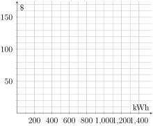
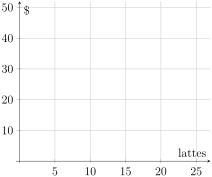
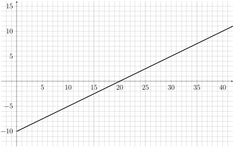
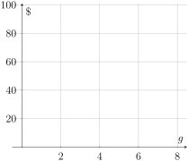

. Use this table to respond to the questions below.
Table1.3.1.Xcel Energy Electricity Charges, Residential Opt-Out Pricing
Summer Billing Cycles (June - September)
Winter Billing Cycles
Fixed Monthly Fees
$12.20
$12.20
$ Per kWh
$0.1038
$0.0857
(a)
Suppose Iris uses no electricity in July. What would her monthly bill be?
(b)
Ellie uses 900 kWh in July. What would her monthly bill be?
(c)
David uses 905 kWh in July. What would his monthly bill be?
(d)
Use your answers to parts (a) - (c) to fill in the table below. What do you notice?
Table1.3.2.Average Rates of Change Between Summer Bills
Average Rate of Change
Iris and Ellie
Iris and David
David and Ellie
(e)
Sketch a graph that shows the relationship between kWh used in the summer and a customer’s bill. Hint: Start by graphing the three points you found in parts (a) - (c)!

Blank axes. The horizontal axis is labeled kWh and ranges from 0 to 1500. The vertical axis is labeled $ and ranges from 0 to 170.
Figure1.3.3.Relationship between Bill and Electricity Usage
Definition1.3.4.
A mathematical model that has a constant rate of change is called linear model. The rate of change of a linear model is called its slope.
Activity1.3.2.
Decide whether each of the three data sets fits a linear model. Explain your answers in words. If a data set does define a linear model, find its slope.
Input
Output
-4
-4
-2
2
0
8
2
14
4
20
Table1.3.5.Data Set 1
Input
Output
10
2
20
10
40
26
80
58
160
122
Table1.3.6.Data Set 2
Input
Output
-5
3
0
4.5
5
7.5
10
12
15
18
Table1.3.7.Data Set 3
Activity1.3.3.
(a)
The vertical intercept of a mathematical model is the value where the graph crosses the vertical axis. It is also called the initial value because it is the output when the input is 0. What is the vertical intercept of your graph in Activity 1.3.1 part (e)?
(b)
Suppose that Theo used \(k\) kWh of energy in a summer month. Find a formula for \(B\text{,}\) Theo’s bill.
(c)
How do the slope and vertical intercept of the linear model appear in your formula in part (b)?
(d)
Write a sentence describing how to build a formula to find the output of a linear model from its slope, vertical intercept, and an input value.
(e)
Suppose a family makes a quarterly (3-month) budget to plan for upcoming expenses. This family estimates they will use an average of 1000 kWh per month in July, August and September. How much money must the family set aside in the budget so that they will be able to pay for the electricity they will use during the three-month period? Round to the nearest dollar, since budgets are only estimates.
Activity1.3.4.
A local coffee shop offers a coffee card that you can preload with any amount of money and use like a debit card each day to purchase coffee. At the beginning of the month (when they get their paycheck), Arlo loads it with $50. Their favorite small soy latte costs $2.63.
(a)
Arlo purchases a latte every weekday. Estimate whether the amount of money they loaded onto their coffee card will last until the end of the month.
(b)
Explain why a linear model would describe the amount of money Arlo has left on their card.
(c)
What is the vertical intercept for the linear model? The slope? How do you know?
(d)
Let \(A\) be the amount Arlo has left on their coffee card and \(n\) be the number of latte’s they’ve purchased. Find a formula for the linear model relating \(A\) and \(n\text{.}\)
(e)
Sketch a graph of your linear model.

Blank axes. The horizontal axis is labeled lattes and ranges from 0 to 25. The vertical axis is labeled $ and ranges from 0 to 50.
Figure1.3.8.Relationship between Latte Purchase and Amount Left on Card
(f)
A horizontal intercept of a mathematical model is the value where the graph crosses the horizontal axis. It tells us the input value that has an output value of 0. What is the horizontal intercept of this model?
(g)
Will Arlo’s card last until the end of the month? If so, how much is left? If not, how many days will it last? (Note: There are about 22 weekdays in a month.)
Activity1.3.5.
Many old comic books contained ads offering money-making schemes to children reading the comics. 2
As an example, suppose a company offered to send 30 greeting cards to a child to sell to relatives, friends, and neighbors. The child was to sell them for \(m\) dollars each, and had to send \(b\) dollars back to the company. Here is a graph of a linear model representing the situation. The input (horizontal value) represents the number of cards sold, and the output (vertical value) represents the child’s profit in dollars.

The horizontal axis is ranges from -3 to 42. The vertical axis is ranges from -13 to 16. The graph shows a line with vertical intercept -10 and horizontal intercept 20.
Figure1.3.9.Relationship between Latte Purchase and Amount Left on Card
(a)
Find a formula for \(P\text{,}\) the child’s profit, in terms of \(n\text{,}\) the number of comics they sell. Hints: What information do you need to find a formula for a linear model?
(b)
What are \(m\) and \(b\) in the story?
(c)
What is the horizontal intercept? What does it represent in the context of this problem?
(d)
How much money will the child earn if they sell all 30 cards?
Activity1.3.6.
Data plans for cell phone plans can be purchased in two different ways. One is an unlimited data plan where the customer pays a set monthly fee for unlimited data. The other is a per-gigabyte (GB) pricing service where the customer pays a set monthly fee plus a specified amount for each GB. The GBs are not prorated (that means it doesn’t matter if the customer uses 0.001 GB or 1 GB, they must still pay for the entire 1 GB). The cost of the phone itself and other fees are the same amount under each plan.
Ximena is shopping for a data plan and needs to decide which option costs less.
Per-GB Pricing: There is a monthly fee of $20 plus $10 per GB.
Unlimited Data: The unlimited plan costs $60 per month.
(a)
Which plan do you think is less expensive and why?
(b)
Let \(P\) be the monthly cost for the per-GB pricing plan and \(g\) be the number of gigabytes used. Create the linear model for \(P\) in terms of \(g\text{.}\)
(c)
Let \(U\) be the monthly cost for the unlimited pricing plan and \(g\) be the number of gigabytes used. Create the linear model for \(U\) in terms of \(g\text{.}\)
(d)
Sketch both of your linear models on the same graph.

Blank axes. The horizontal axis is labeled \(g\) and ranges from 0 to 8. The vertical axis is labeled $ and ranges from 0 to 100.
Figure1.3.10.Relationship between Latte Purchase and Amount Left on Card
(e)
Under what conditions is the per-GB plan less expensive? Under what conditions is the unlimited plan less expensive? Explain in words how you found your answers.